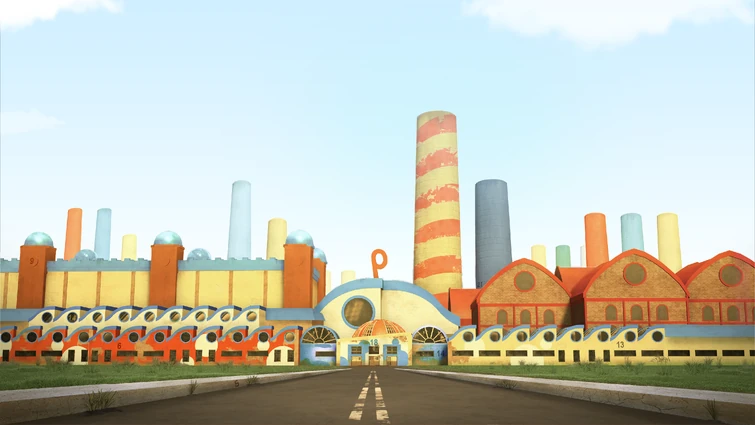
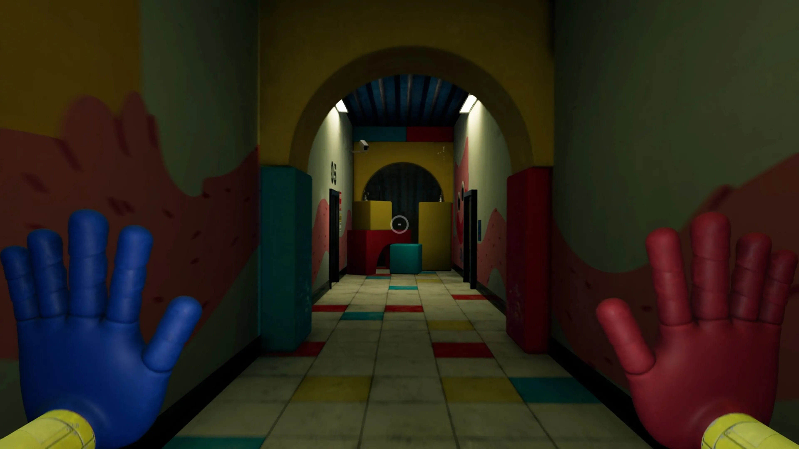
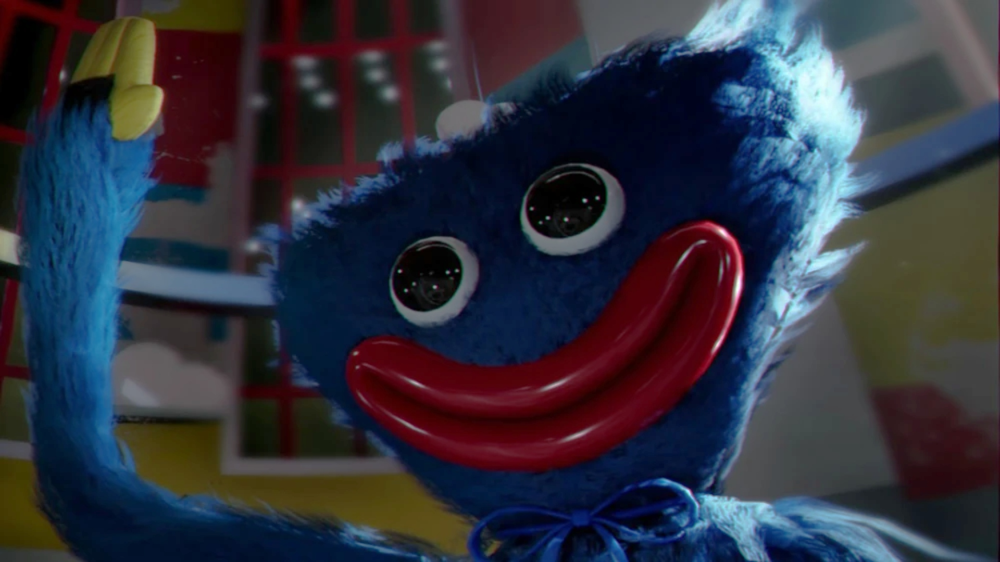
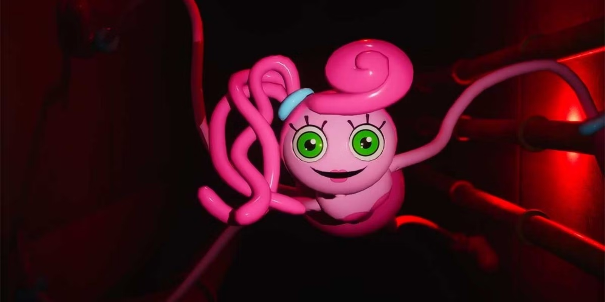
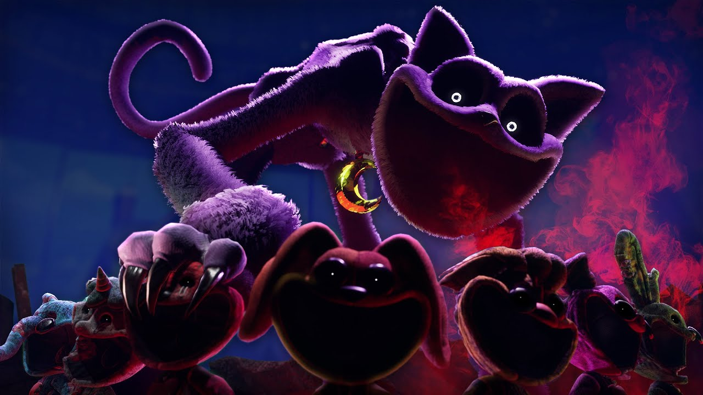
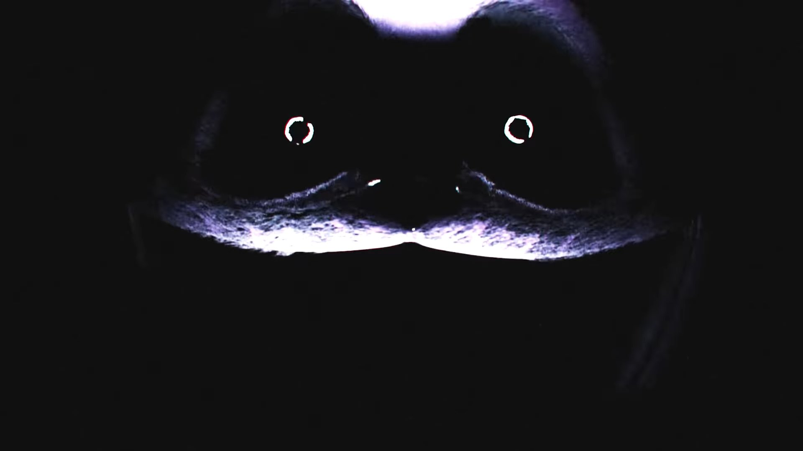
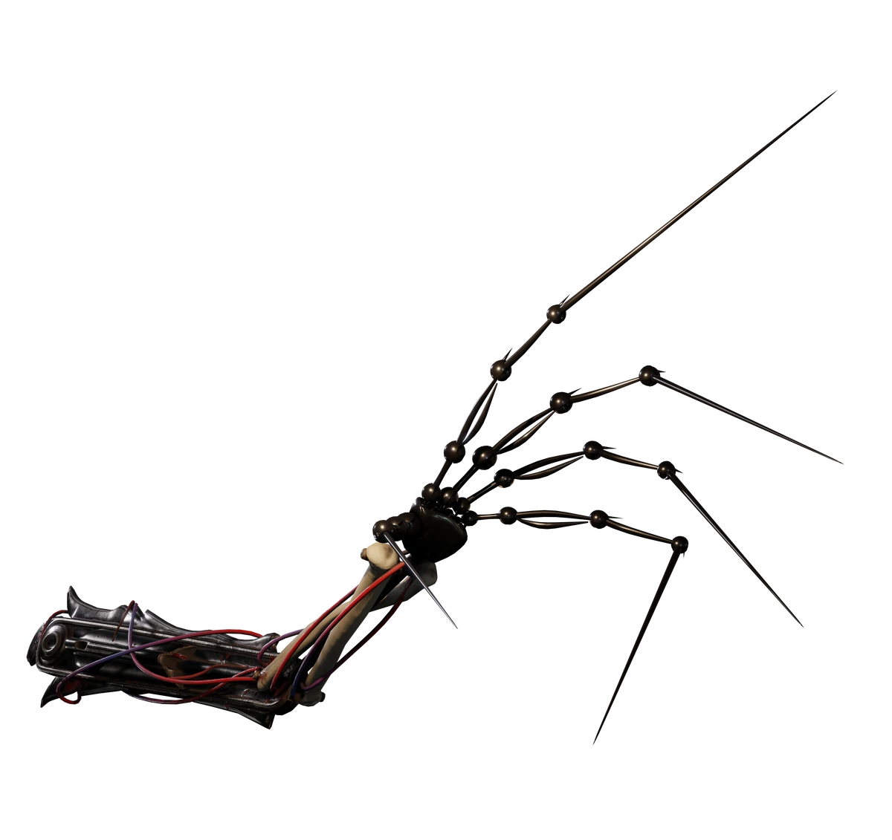

Não recomendamos esse conteúdo para pessoas sensíveis, se você é uma pessoa com problemas emocionais saia imediatamente! Respeitamos a saúde psicológica de todos os usuários.
Conheça o mundo do terror
Seja muito bem vindo(a) ao site dedicado inteiramente ao jogo Poppy Play Time 3, Jogo Desenvolvido pela Mob Entertainment, que está fazendo um sucesso gigante no mundo todo, aqui você vai descobrir as histórias de cada jogo, vai conhecer os vilões e os personagens do poppy play time 1, 2 e 3 que foi lançado por último em 2024.
Para entendermos a história do jogo todos os chapters serão citados em um breve resumo
poppy playtime é uma franquia de games de terror desenvolvida pela MOB Games, o jogo se passa em
em uma fabrica de experimentos chamada PlayTimeCompany, com intuito de criar brinquedos para as crianças.
Os brinquedos foram criados para brincar
com as crianças, a principio teria dado tudo certo
já que eles fizeram um grande sucesso pelo mundo a fora
más os experimentos conforme iam sendo criados
começaram a dar problemas técnicos e passaram a ser uma ameaça para todos os que trabalhavam la dentro,
não sendo só isso a empresa foi acusada de fazer experimentos com crianças
e então a PlaytimeCompany foi fechada para sempre deixando segredos sombrios e misteriosos junto a fábrica.
Quem é o jogador que você controla?
O jogador é um ex funcionário da PlayTimeCompany que resolve voltar a sua antiga empresa para investigar o que a naquele lugar, depois de trabalhar com vários experimentos na playtime ele fica muito intrigado com que aconteceu com experimentos a muitos anos atrás, más o que ele não sabe é que outros funcionários antes da empresa se fechar foram obrigados a pedido do dono para criarem experimentos para cuidar daquele local com intuito de proteger toda história de mortes e horrores que aconteceram naquele lugar.

PlayTime Company
Depois de dez anos fechada o local parece mais sombrio e cheios de mistérios a serem desvendados más ninguém teria a coragem de chegar perto de lá, más esse rapaz (que não sabemos o nome) resolve investigar o que há de misterioso lá dentro.

Personagem Principal
Franquias do jogo
Cada Franquia existe um inimigo diferente
Chapter 1
A primeira franquia o inimigo é o experimento Huggy wuggy um monstro
gigante azul com a boca cheia de dentes que é
segurança do primeiro saguão a função de Huggy wuggy é não deixar
que nenhuma pessoa passe e vá além do que é permitido.

Huggy Wuggy
Mesmo assim se você desobedecer e resolver entrar Huggy Wuggy passa-rá a observar seus passos cuidadosamente pelas sombras e se você entrar em um local que seja proibido ele ataca-rá você
Chapter 2
se você conseguir passar por huggy wuggy você descera mais fundo no subsolo da playtime
lá você encontra-rá Mommy long legs que é um experimento que consegue
se esticar por onde quiser, ela fará com que você entre em um jogo forçado
a derrotar outros experimentos, que são Bunzle bunny,mini huggies e
PjPug-A-Pillar, se você conseguir passar por eles e derrotar Mommy long lags, você vai conseguir avançar para o próximo cenário que é o capitulo 3.

Mommy long legs
Chapter 3
onde você terá que explorar A PlayCare, e vencer os monstros mágicos que exitem
lá, o vilão principal é CatNap e assim como mommy long lags ele é astuto em
pressão psicológica fazendo com que o personagem fique com várias ilusões
e fique com pressentimento de que está sendo observado.

Cat Nap
Você Já está pronto?
Agora que você já tem uma base do que se trata a história , vamos focar no capitulo três a partir de agora ok!
Enredo de poppy playTime 3
Dentro desse trem em poppy play time 2, o mesmo começa a dar problemas
e começa a sair da trilha e então cai o personagem fica desacordado
nesse momento uma figura estranha Roxa pega o personagem e o joga
em um lugar sombrio esse lugar é um orfanato decrépito conhecido como
Creche e fica sob a outrora mágica fábrica de brinquedos. Você deve
percorrer este lugar assombrado, resolvendo novos
desafios e evitando os pesadelos que espreitam na
escuridão.
Quem são os Smilling Critters? eles vão aparecer em poppy playtime? E Quem são eles?
Infelizmente eles não vão aparecer em poppy playtime 3 isso porque CatNap
com seus poderes mágicos os derrotou com seu gás do Sono fazendo com que todos
morressem envenenados, posteriormente CatNap conseguiu outros experimentos
guardados na fabrica mas eles são bem diferentes porque são mais pequenos
eles são chamados de mini smilling critters, por serem pequenos e mais
frágeis CatNap aproveitou-se dessa vantagem e os manipulou ensinando-os
a matar aqueles que se perdiam na PlayCare(Local onde fica a creche).
Os Smilling Critters são os experimentos avançados
feitos para causar muita alegria nas crianças.
o objetivo da PlayTimeCompany era fazer as crianças se sentirem
mais confortáveis do que já estavam então criaram os Smilling Critters
com poderes mágicos que davam ainda mais gás para os pequeninos.
Eles são oito no total, conheça os nomes dos smilling-critters
agora são eles, Bubba BubbaPhant, Bob BearHugh, CraftCorn, KickinChcken,
Hoppy HopsCotch, PickyPig, DogDay e CatNap, se você notar cada um deles
abaixo, pode-rá ver os poderes de cada um marcado em seu peito.
Veja um pequeno Trailler de animação dos smilling Critters
Vamos falar sobre CatNap o experimento desconhecido extramente inteligente
e perverso, consegue andar por toda a playcare sem dificuldade alguma, sendo
mais forte e astuto que Mommy long lags e Huggy Wuggy juntos, a função
dele é de cuidar dos experimentos rebeldes que são contra o experimento 1006, esse experimento colocou CatNap para cuidar dessa função.
Ele é um grande perito em deixar todas a suas presas em um desespero
gigantesco isso porque ele não ataca Diretamente como foi citado no tema anterior ele deixa que você ande por toda parte tomando seus passos e deixando que você encontre experimentos para derrotar além de drogar você com seu gás fazendo com que suas presas fiquem apreensivas, com medo e alucinações é um monstro horripilante não é atoa que ele manipulou
todos os smilling critters com muita facilidade transformando em suas cobaias.

Pesadelo com gás de CatNap
Existe uma teoria que diz que o personagem do jogo respira o gás do sono e
acaba desmaiando e sonhando que está em uma pequena parte da PlayCare,
parecendo com um quarto relativamente pequeno nesse quarto existe uma tv
com um dvd em baixo, dentro do quarto existe uma fita que o personagem pega
e coloca para assistir quando o video começa ele vê a figura do monstro que
o assombrou no primeiro jogo.
Huggy Wuggy com uma voz de fundo contando
como funcionavam as coisas por ali, derrepente essa voz muda em tom leve
e calmo a figura que aparecia na tv começa a distorcer Huggy Wuggy,
deixando-o mais assustador e diferetemente do Huggy Wuggy que
estáva com um semblante sorridente agora estáva com os olhos negros
e todos os dentes aparecendo, o personagem vendo aquilo fica fixado
na tv vendo aquele monstro apilidado de Nightmare Huggy Wuggy saindo da tv e perseguindo ele, ele tenta correr más o monstro o alcança e o pega, quando isso acontece personagem acorda do pesadelo.
O Protótipo 1006
O Experimento 1006 é o protótipo mais poderoso criado no jogo, assim como
CatNap ele observa a todos pelas sombras, Inclusive a PlayTime Company
mencionou que todos os outros experimentos tem medo dele por ele ter
uma inteligência suprema de não só manipular os outros experimentos como
o de manipular humanos e experimentos muitos mais fortes do que ele um
exemplo disso é o próprio CatNap, não explicado no jogo más a própria
Poppy diz que CatNap ve o experimento 1006 como um salvador de todos
os experimentos Veja Abaixo fotos do protótipo.

Existe uma teoria entre os fans que diz que o experimento
1006 quer fazer uma só maquina de todas as partes dos experimentos inventados pela
PlayTime Company uma espécie de maquina suprema.
inclusive uma coisa que indica isso é a própria Mommy long lags que na hora de sua morte ela diz a seguinte Frase "ele vai me fazer parte dele" e logo após isso aparece o experimento 1006 e leva apenas a cabeça e seu braço esquerdo,
que é o que sobrou de seu corpo depois de ser triturada em uma maquína.
Ele também é visto em poppy play time 3 quando mata Cat Nap no final
experimento 1006 em poppy play time 2
experimento 1006 em poppy play time 3
Um último resumo
Se Você reparar bem no nome "Poppy Play Time", de cara notará e se pergunta-rá da onde vem o nome Poppy?
A poppy é conhecida como o primeiro experimento, ela sabe tudo sobre a fábrica como funcionavam as coisas no subsolo más o fato e que nem ela sabe ao certo o tamanho desse lugar sombrio, más ela conhece todos os experimentos que encontrou por onde passou.
Ela é vista pelos outros experimentos como a "salvadora da luz", isso porque as crianças e o humanos que viviam lá dentro daquela fábrica não via a luz do sol nem sabiam como eram o mundo lá fora.
Tá mais porque ela é a salvadora?. É ai onde entra o verdadeiro Horror sem fim, o manipulador 1006 convenceu todos os experimentos a participar do "Dia da Alegria" que consistia na matança de todos os humanos e crianças que haviam por ali, ninguém estava salvo até os experimentos menores era vitmas dos mais fortes, Poppy por sua vez convencia muitos experimentos a não fazer parte do dia da alegria, ela dizia que existia um mundo totalmente diferente lá em cima e alguns com esperanças confiavam em poppy.
Momento do Dia da Alegria
Eles sabiam que Poppy era muito esperta e tinha mais inteligência do que todos ali presentes, más tudo mudou quando poppy foi capturada por catnap e trancada em uma caixa pelo próprio protótipo 1006, não se sabe ao certo porque ele não a matou.
Com a poppy presa o 1006 sabia que os experimentos não iriam saber se proteger e com CatNap a solta cada um morreria horrívelmente pelas mãos de CatNap um exemplo disso são seus próprios ex amigos Smilling Critters.
Agora essa missão fica nas mãos desse corajoso homem que entrou na fábrica (O Player que é você), ele tem a missão de explorar a fábrica e saber a verdade e por um fim nesse pesadelo de mortes e horrores que estão no subsolo.
Existem mais personagens dentro do jogo e mais histórias também que não foram citadass aqui porque se não passariamos muito tempo falando sobre cada uma das hístórias e os experimentos, por isso citei apenas os que você precisa saber e histórias que talves te façam amar essa franquia.
Canais de Teorias
Se quiser saber mais sobre as hístórias e personagens do jogo pode ver alguns canais que eu vou recomendar e que particularmente eu gosto muito
Se Você chegou até aqui já sabe praticamente tudo o que precisa saber para jogar o poppy play time 3, e também já sabe quem são os vilões de poppy play time 1 e 2 e já é capaz de joga-los sem dificudades, além de conhecer alguns personagens do jogo.
É Só Baixar e começar a jogar esse magnifico jogo, uns dos melhores jogos de terror inventados Clique aqui para baixar